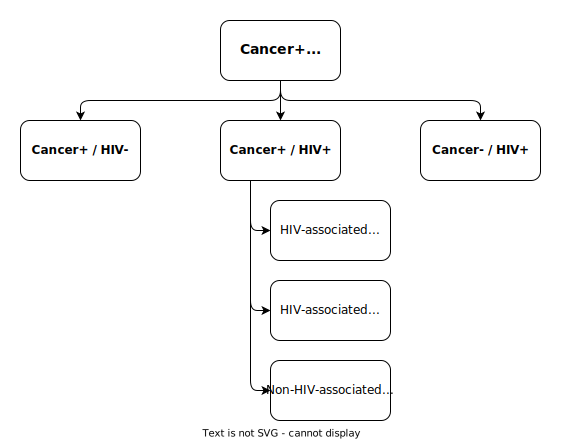

| City | Hospital | University |
|---|---|---|
| Cologne | Uniklinik Köln | Universität zu Köln |
| Frankfurt/Main | Universitätsklinikum Frankfurt | Goethe-Universität Frankfurt |
| Freiburg | Universitätsklinikum Freiburg | Albert-Ludwigs-Universität Freiburg |
| Munich | LMU Klinikum | Ludwig-Maximilians-Universität |
Study Design
HIVCAre is a multicenter retrospective cohort study, conducted on Real World Health Data from German university hospitals.
Research Objectives
Main Objective: Explore epidemiology and inpatient care characteristics of HIV-positive cancer patients
Describe cancer occurrence in HIV-positive patients over time stratified by cancer category
Explore possible differences in care characteristics between HIV-negative and HIV-positive cancer patients
Explore differences in course of therapy between HIV-negative and HIV-positive cancer patients
For a detailed list of Research Items, see according Section below.
Study Data
The primary health data analyzed in this study is curated by hospitals following legal requirements founded in §21 Krankenhausentgeltgesetz (KHEntgG). For more details, see Chapter Study Data.
Study Cohort
Data of patients admitted to the following university hospitals (in alphabetical order):
Inclusion criteria
- Admitted between 01-01-2005 and 12-31-2022
- Aged at least 18 years at date of admission
- At least one documented ICD-10 code representing malignancy or HIV infection
Exclusion criteria
- Implausible documentation of ICD-10 codes
Stratification Model

Sample Size Determination
Since this study does not aim at a particular effect size analysis and it can be assumed that the yielded Sample Sizes will be rather large, no specific Sample Size Determination will be performed. An estimation of the number of included patients will be available for each participating site and can reach up to 50.000 patients for large University hospitals.
Research Items
The following research items result from the research objectives stated here.
| Item | Compared Strata | Research Item | Metrum Specification | Method Type | Method |
|---|---|---|---|---|---|
| Epidemiology | |||||
| 1 | All main subgroups | Sample size over time | Descriptive | Stacked Histogram | |
| 2 | All main subgroups | Age distribution over time | Age at first occurrence of primary diagnosis | Descriptive | Stacked Histogram |
| 3 | All main subgroups | Gender distribution over time | Descriptive | Stacked Histogram | |
| 4 | All main subgroups | Spatial distribution | Counts of patients from different postal code areas | Descriptive | Map |
| 7 | Cancer+/HIV+ | Occurrence of different HIV-associated cancer diagnoses over time | Descriptive | Stacked Histogram | |
| 8 | Cancer+/HIV- | Occurrence of different HIV-associated cancer diagnoses over time for control | Descriptive | Stacked Histogram (for control) | |
| 9 | Cancer+/HIV+ | Projection of HIV-associated cancer diagnoses | Inferential | Regression | |
| 10 | Cancer+/HIV+ | Occurrence of AIDS in cancer patients, stratified by cancer category over time | Descriptive | Stacked Histogram | |
| 11 | Cancer+/HIV+ | Occurrence of AIDS code after chemotherapy | Descriptive | ||
| 12 | Cancer+/HIV+ | Presumed order of diagnosis of HIV infection and cancer over time | Descriptive | Stacked Histogram | |
| 13 | Cancer+/HIV- vs. Cancer+/HIV+ | Age at presumed cancer onset | Age at first cancer code occurrence | Descriptive | |
| 14 | Cancer+/HIV- vs. Cancer+/HIV+ | Cancer topography grouped by organ | Descriptive | Pyramid plot | |
| 15 | Cancer+/HIV- vs. Cancer+/HIV+ | Cancer topography grouped by organ over time | Descriptive | Stacked Histogram | |
| 16 | Cancer+/HIV- vs. Cancer+/HIV+ | Projection of cancer topography grouped by organ | Inferential | Regression | |
| 17 | Cancer+/HIV- vs. Cancer+/HIV+ | Cancer topography grouped by ICD-10 grouping | Descriptive | Pyramid plot | |
| 18 | Cancer+/HIV- vs. Cancer+/HIV+ | Cancer topography grouped by ICD-10 grouping over time | Descriptive | Stacked Histogram | |
| 19 | Cancer+/HIV- vs. Cancer+/HIV+ | Projection of cancer topography grouped by ICD-10 grouping | Inferential | Regression | |
| 20 | Cancer+/HIV- vs. Cancer+/HIV+ | Cancer occurrence grouped by entity | Descriptive | Table / Pyramid plot of most common | |
| 21 | Cancer+/HIV- vs. Cancer+/HIV+ | Cancer occurrence grouped by entity over time | Descriptive | Table / Stacked histogram of most common | |
| 22 | Cancer+/HIV- vs. Cancer+/HIV+ | Projection of cancer occurrence grouped by entity | Inferential | Regression | |
| 25 | Cancer+/HIV- vs. Cancer+/HIV+ | Metastasis occurrence | Descriptive | Columnplot | |
| 31 | Cancer+ | Sequence in presumed HIV / Cancer / Metastasis / AIDS onset | Descriptive | Sankey diagram | |
| Care Characteristics | |||||
| 5 | All main subgroups | Count of admissions per patient | Descriptive | Boxplot | |
| 6 | All main subgroups | Mean length of stay per patient | Descriptive | Box-/Violinplot | |
| Therapy | |||||
| 23 | Cancer+/HIV- vs. Cancer+/HIV+ | Occurrence of cancer therapy modalities | Descriptive | Columnplot | |
| 24 | Cancer+/HIV- vs. Cancer+/HIV+ | Count of chemotherapy sessions | Descriptive | ||
| 27 | Cancer+/HIV- vs. Cancer+/HIV+ | Occurrence of complications after chemotherapy | Complications: Ventilation, dialysis | Descriptive | |
| 28 | Cancer+/HIV- vs. Cancer+/HIV+ | Time from chemotherapy to complication | Descriptive, Inferential | Kaplan-Meier-Plot for cumulative hazard | |
| 32 | Cancer+/HIV- | Sequence of cancer therapy modalities | Descriptive | Sankey diagram | |
| 33 | Cancer+/HIV+ | Sequence of cancer therapy modalities | Descriptive | Sankey diagram | |
| Outcome | |||||
| 26 | Cancer+/HIV- vs. Cancer+/HIV+ | Time from presumed cancer to presumed metastasis onset | Desriptive, Inferential | Kaplan-Meier-Plot for cumulative hazard | |
| 29 | Cancer+/HIV- vs. Cancer+/HIV+ | Death after chemotherapy | Descriptive | ||
| 30 | Cancer+/HIV- vs. Cancer+/HIV+ | Discharge reasons | Descriptive, Inferential | ||